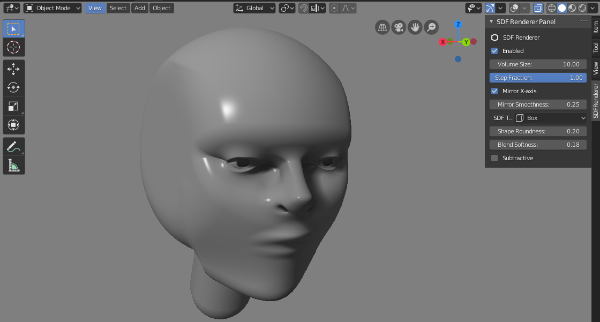

<div class="modal fade" id="quasi_modal" tabindex="-1" aria-labelledby="quasiLabel" aria-hidden="true">
	<div class="modal-dialog modal-xl">
		<div class="modal-content">
			<div class="modal-header">
				<h5 class="modal-title" id="quasiLabel">QuasiSDF</h5>
				<button type="button" class="btn-close" data-bs-dismiss="modal" aria-label="Close"></button>
			</div>
			<div class="modal-body d-flex justify-content-center">
				<div class="col-md-9">

					<figure class="figure">
						<video playsinline="" controls="" preload="metadata" src="./assets/videos/QuasiSDF.m4v" style="display: block; width: 100%; background-color: rgb(242, 241, 238);"></video>
						<!-- <figcaption class="figure-caption p-1">Left: Unedited. Right: Art-directed stylised shading using Shading Rig</figcaption> -->
					</figure>

					<p>
					QuasiSDF is a 3D sculpting tool I am building currently for Blender.
					</p>

					<p>
					Signed distance fields (SDFs) are a convenient way to sculpt 3D surfaces from primitive shapes. Their implicit nature allows freeform smooth additive/subtractive blending, with infinite resolution rendering. SDFs are popular in *ShaderToy* but manual coding is required. *Dreams* for PS4 provides an effective interface for 3D sculpting using a gamepad or motion controllers. My tool is to experiment with a desktop-based interface for SDF sculpting.
					</p>


					<div id="carouselExampleIndicators" class="carousel slide pt-3" data-bs-ride="carousel">
						<div class="carousel-indicators">
							<button type="button" data-bs-target="#carouselExampleIndicators" data-bs-slide-to="0" class="active" aria-current="true" aria-label="Slide 1"></button>
							<button type="button" data-bs-target="#carouselExampleIndicators" data-bs-slide-to="1" aria-label="Slide 2"></button>
							<button type="button" data-bs-target="#carouselExampleIndicators" data-bs-slide-to="2" aria-label="Slide 3"></button>
						</div>

						<div class="carousel-inner">
							<div class="carousel-item active">
								
							</div>
							<div class="carousel-item">
								
							</div>
							<div class="carousel-item">
								
							</div>
						</div>

						<button class="carousel-control-prev" type="button" data-bs-target="#carouselExampleIndicators" data-bs-slide="prev">
							<span class="carousel-control-prev-icon" aria-hidden="true"></span>
							<span class="visually-hidden">Previous</span>
						</button>
						<button class="carousel-control-next" type="button" data-bs-target="#carouselExampleIndicators" data-bs-slide="next">
							<span class="carousel-control-next-icon" aria-hidden="true"></span>
							<span class="visually-hidden">Next</span>
						</button>
					</div>


				</div>
			</div>
			<div class="modal-footer">
				<button type="button" class="btn btn-secondary" data-bs-dismiss="modal">Close</button>
			</div>
		</div>
	</div>
</div>
